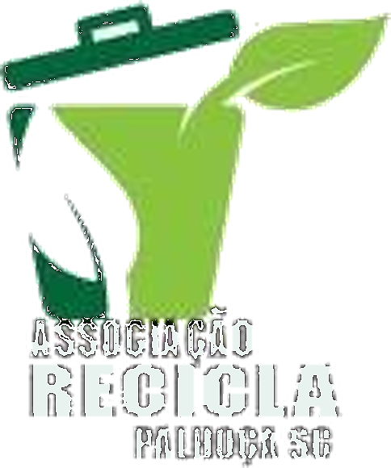
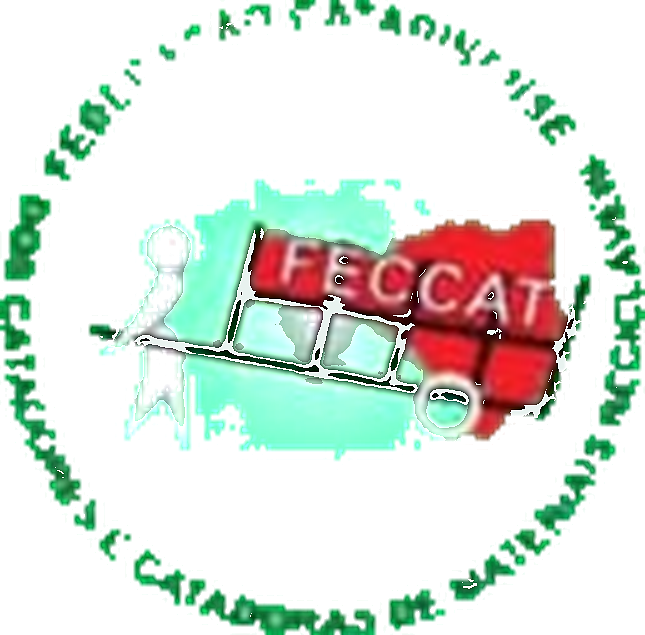
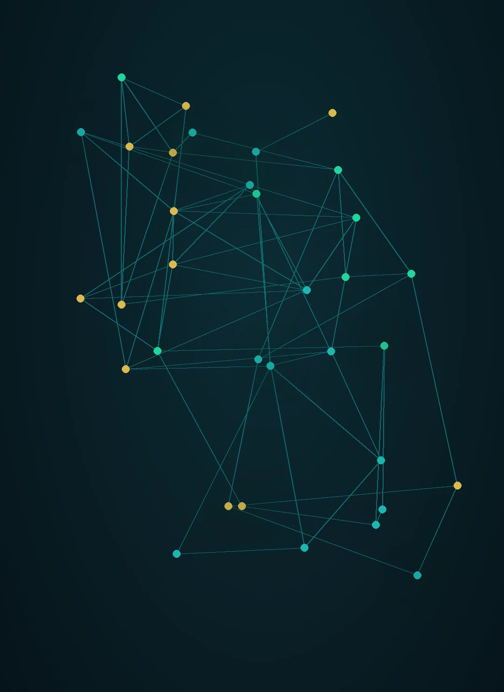
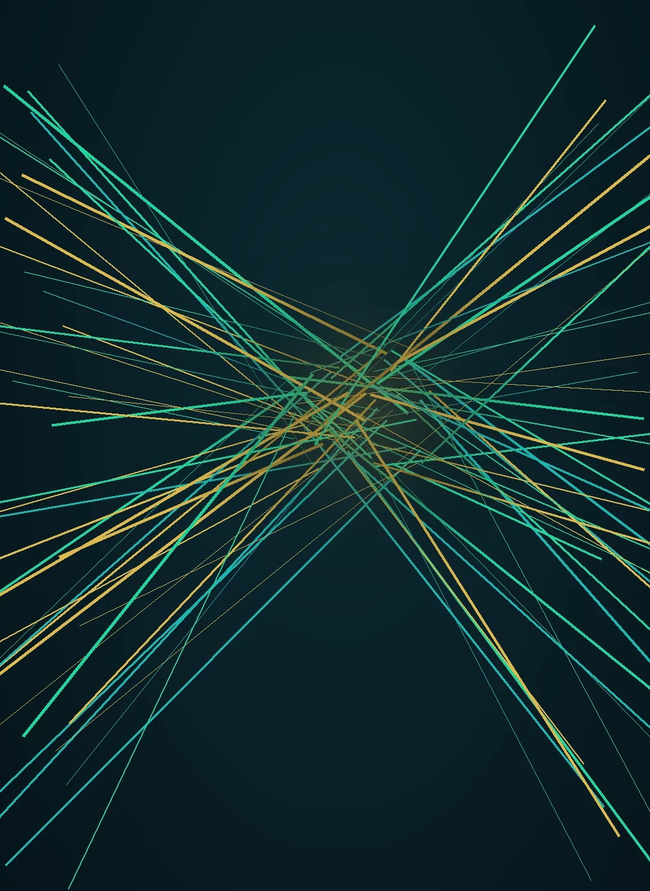
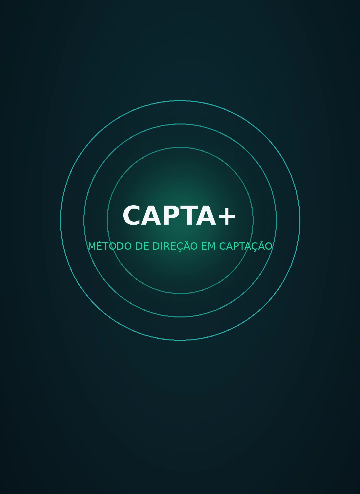
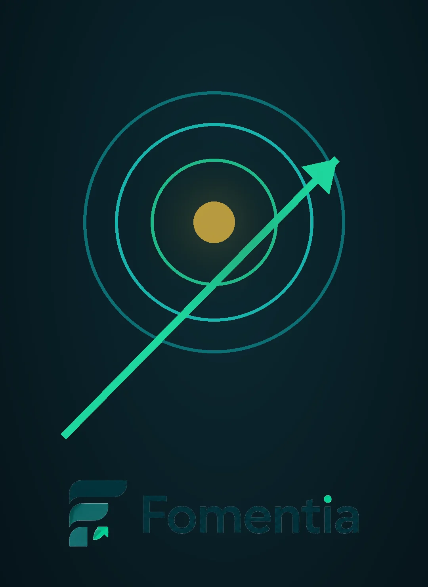

Tecnologia + estratégia para transformar oportunidades de financiamento em projetos preparados para captar.
Organizações que já contam com a atuação do Método Capta+ em suas jornadas de captação e estruturação.



Editais, fundos e incentivos existem o ano inteiro. O que trava a captação não é a falta de aviso — é a oportunidade que chega quando a entidade ainda não está pronta para responder.
Editais, fundos e chamadas espalhados em dezenas de portais. Quem não tem radar descobre tarde — e correr contra o prazo custa qualidade.
Estatuto desatualizado, certidão vencida, diretoria sem ata. A porta fecha antes do pedido — e o motivo raramente é o mérito.
Trabalho sério descrito de um jeito que o edital não reconhece. O impacto existe; a forma de apresentá-lo é que não.

Captação exige leitura, compatibilidade, estrutura e continuidade. O Método Capta+ organiza essa jornada para que oportunidades deixem de ser apenas volume e ganhem contexto para decisão.
Clareza para identificar o que realmente merece atenção.
Compatibilidade e estratégia antes de transformar oportunidade em esforço.
Método para transformar intenção em uma jornada organizada.
Cada pilar é um passo da mesma jornada: encontrar, selecionar, decidir, preparar, validar e acompanhar.
Leitura estratégica, foco e organização para enxergar o que importa.
Menos dispersão e mais critério para transformar possibilidades em escolhas.
Aderência, coerência e priorização antes de seguir para a execução.
Organização de objetivos, etapas e entregas em uma construção consistente.
Preparação, rastreabilidade e continuidade para reduzir perda de contexto.
Prazos, marcos e acompanhamento para manter a jornada em movimento.
Da leitura inicial ao acompanhamento, cada etapa existe para reduzir dispersão e preservar continuidade.

Entendemos sua realidade.
Encontramos oportunidades.
Filtramos o que faz sentido.
Preparamos o projeto.
Organizamos a abordagem.
Acompanhamos o ciclo.
Entre o edital que aparece e o recurso que entra existe uma sequência. Pular etapa é o que faz a oportunidade virar intenção.
É isso que o Método Capta+ organiza.

Não pedimos confiança por adjetivo. Mostramos de onde ela vem.
A jornada em seis etapas produz artefatos concretos: radar de oportunidades, leitura de compatibilidade, estrutura do projeto, prontidão documental e monitoramento do ciclo.
Associações, cooperativas e federações do Sul do Brasil aplicam o método na prática — do estatuto ao relatório de execução.
Trajetória declarada em captação de recursos públicos e incentivados para projetos de inclusão digital, saúde e infância.
Acumulado de captações próprias (FIA Estadual/SEJUF-PR, FIA Municipal/CMDCA, COMAS e emenda parlamentar) e de projetos conduzidos no HUB — mais de 8 fontes de recursos. Consultoria de meio: o recurso captado pertence à organização e é comprovável em cada conta vinculada e prestação de contas.
O método se adapta ao tamanho da organização — do primeiro edital à gestão de um portfólio inteiro.
Organizações da sociedade civil que precisam transformar projeto em recurso.
Grupos de trabalho coletivo com CNPJ ativo e vontade de captar em nome próprio.
Entidades locais que dependem de editais, fundos e emendas para manter a atividade.
Estruturas que representam vários grupos e precisam de padrão e escala.
Organizações com portfólio que exigem governança e prestação de contas sólida.
Grupos em formalização que precisam organizar a casa antes de pedir.
Diagnóstico → Direção → Próximo passo. Sem promessa de resultado — com método e critério.

Conte brevemente o que sua equipe precisa organizar. O Método Capta+ entra em contato para uma conversa direcionada ao seu cenário.
Gestão Inteligente para Captação Pública.
Fale com o Método Capta+
Conte brevemente o que a sua equipe precisa organizar. A conversa começa no WhatsApp — sem formulário, sem espera.
Abrir conversa no WhatsApp →Ou escreva para drallanvieira@gmail.com.
O Método Capta+ apoia organização, análise e gestão da jornada de captação. Não substitui pareceres jurídicos, contábeis, técnicos ou documentais e não representa garantia de aprovação, assinatura, protocolo ou resultado em processos públicos.